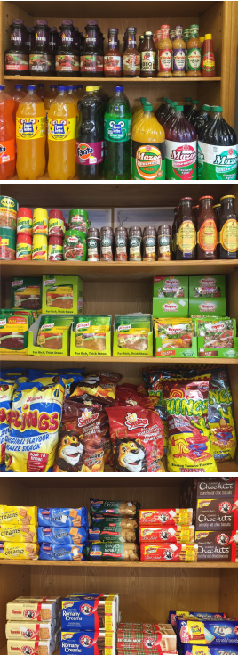

Sample menu:
Groceries
Our range includes

Mazoe
Ouma Rusks
Mrs Ball’s Chutney Original
Mrs Ball’s Chutney Chilli
Mrs Ball’s Chutney Peach
Robertson’s Spices
Aromat
Willards Tomato Flavour
Willards Smoked Beef
Flings
Milo Bars
Lunch Bars
Chappies
PS Bars
Iwisa all sizes
Nandos Peri-Peri
Steers Sauces
Crème Soda
Pine Nut
Granadilla Twist
Fanta Grape
Lemon Twist
Iron Brew
Sparberry
Cheeky chilli
Chockits
Lemon Creams
Lobels Lemon Creams
Romany Creams
Tennis Biscuits
Eet-Sum-Mor
Zoo biscuits
Sun Jam